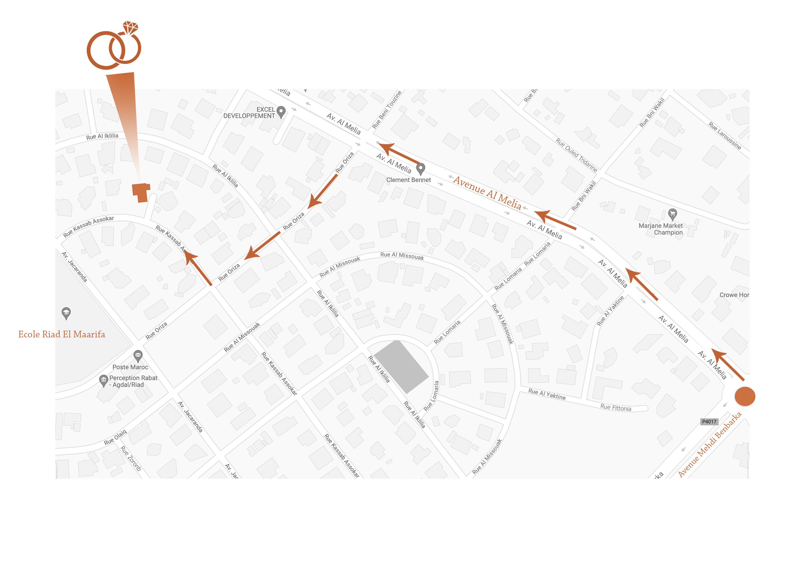
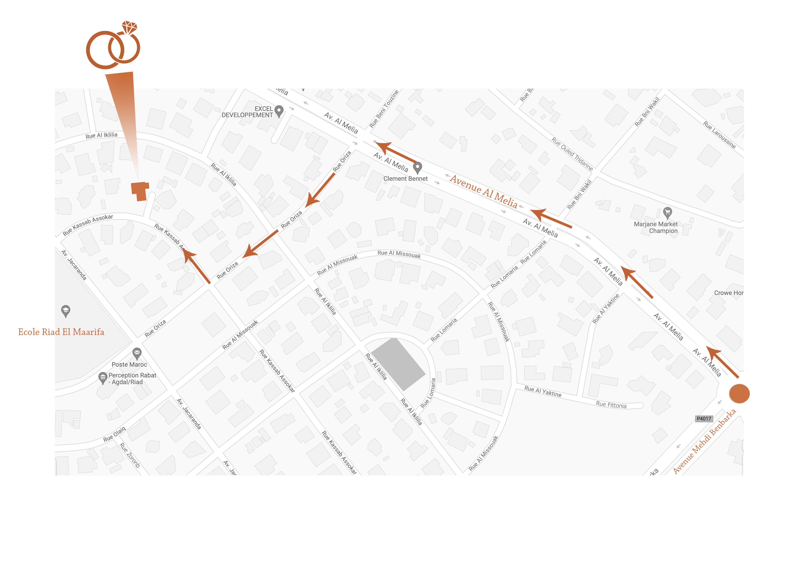
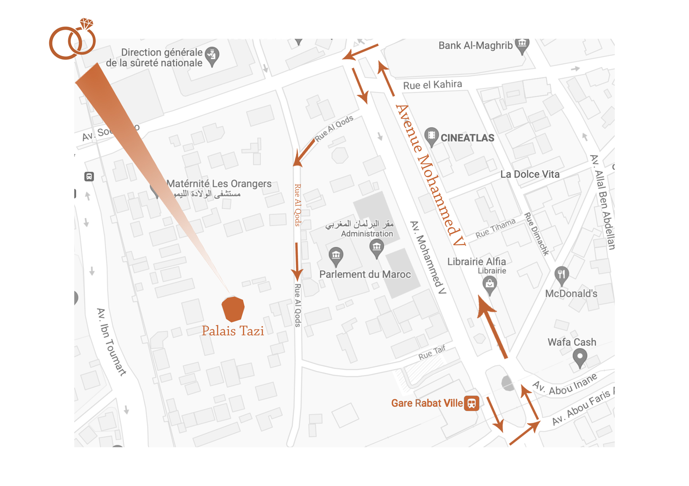

30 Juillet 2022
30 Juillet 2022
Nous sommes heureux de célébrer à vos côtés notre union pour la vie !
Comme nous comptons sur la présence de chacune et de chacun d’entre vous, nous avons conçu ce site web pour vous faciliter l’organisation de votre déplacement, pour vous suggérer des endroits ou des lieux que nous aimons à Rabat et au Maroc et pour communiquer avec vous tous au fur et à mesure que le jour J approche #yeay
D’ici là, prenez soin de vous. On vous embrasse !
Lamia & Charles
Adresse : 5 rue Assoubal Secteur 3 Hay Riad Rabat (près de l’école Riad Al Marifa)
 

Adresse : 1 rue Al-Quds Rabat (derrière le parlement de Rabat).

Soit environ 20 minutes en voiture, possibilité de prendre un taxi.
Idéal pour un court aller retour sur le Week-End du mariage.
Possibilité de prendre le train (2h en moyenne, changement de train à casablanca) ou de louer une voiture sur place (Avis, Budget, …) en 1h.
Idéal pour un court aller retour sur le Week-End du mariage, à condition de louer une voiture.
Possibilité de prendre le train (4h12min) ou de louer une voiture sur place (Avis, Budget, …) en 4h.
À envisager, si vous avez choisis de faire un tour à l’aller ou au retour par le Sud.
Possibilité de prendre le bus, l’avion ou de louer une voiture sur place en 6h.
À envisager, si vous avez choisis de faire un tour à l’aller ou au retour par Taghazoute.
Possibilité de prendre le TGV en 1h20 ou de louer une voiture sur place en 2h45.
À envisager, si vous avez choisis de faire un tour à l’aller ou au retour par le nord / la méditerranée.
Circulent peu de nuit.
Circulent de nuit. Mis à part les petits taxis bleus, voici une bonne alternative pour faciliter vos déplacements. Pour l'utiliser, télécharger l'application “CAREEM”, le Uber marocain).
Reste le moyen idéal pour se déplacer librement.
Pas un bon réseau de transports en communs (ou peu accessibles).
Villa Mandarine
En plein cœur des quartiers résidentiels de Rabat), notre endroit préféré à Rabat quand nous ne sommes pas chez les parents de Lamia évidemment.Sofitel Jardin des Roses
Classique avec un super jardin et de jolies terrasses.Dawliz Hôtel
Refait à neuf récemment avec une jolie vue sur le fleuve bouregreg.STORY Rabat Boutique Hôtel & Spa
Près du golf de Rabat, un hôtel niché en plein cœur du quartier des ambassadeurs.Ceux dans la medina sont depaysants mais pas toujours le plus pratique pour se déplacer de jour comme de nuit.
Riad L'Alcazar
Super Ryad tenu par une connaissance, traditonnel et élégant à la fois. L’emplacement est superbe, proche des lieux à visiter et du lieu du mariage.Dar Shâân by Villa Mandarine
Jamais visité encore mais si c’est le nouveau bijou de la famille qui tient la Villa Mandarine depuis 20 ans, on ne peut que recommander !Airbnb reste le meilleure opérateur ; si vous pensez à des maisons de plage ou dans d’autres villes sur une semaine, dites-nous, nous vous partagerons les contacts que nous récupérons de nos proches sur place.
Café Maur
Avec une vue imprenable sur les Oudayas, et l’inconditionnel plateau de thé à la menthe et de gâteaux traditionnels marocains.Villa mandarine
Super spot pour se détendre dans un jardin fleuri, entouré de palmiers et d’orangers. On aime y « chiller » pour un café, un verre ou un thé !Ouazzani
Pour des sandwichs marocains, connus depuis plusieurs générations, un peu comme une madeleine de Proust pour certain.Ty Potes
Pour des crêpes en plein cœur du quartier des affaires de Rabat. Une ambiance d’épicerie fine.Dar Naji - Cuisine marocaine
Zerda - Cuisine marocaine
Dinarjat - Cuisine marocaine
Les 3 palmiers
Notre restaurant préférée, vue sur mer à quelques kilomètres seulement de Rabat. On y mange très bien que ce soit du poissons, des fruits de mer, de la viande, les desserts ...Sacaleta
Un restaurant de tapas tenu par un catalan, on y mange super bien, l’ambiance est cosy et chaleureuse (oui, on adore!).Le Picolos
en plein cœur de la ville, QG pendant longtemps des années de lycée de Lamia entre amis et en famille : cuisine française au sein d’un jardin intérieur.Villa Mandarine
Cuisine du monde & Cuisine marocaine traditionnelle.Marsa
Restaurant de poisson sur la Marina de Salé, jolie vue et joli cadre.
Mausolée Mohammed V
Le Mausolée Mohammed V, tout de marbre blanc, est l'un des plus beaux monuments de la capitale Marocaine.Royal golf dar essalam
Le Royal Golf Dar Es Salam de Rabat est déjà une légende pour les amateurs de golf, puisque c’est l’endroit où se célèbre le prestigieux Trophée Hassan II.
Si vous avez besoin d'informations / d'aide sur place, n'hésitez pas à contacter nos super amis qui vous aideront avec plaisir !